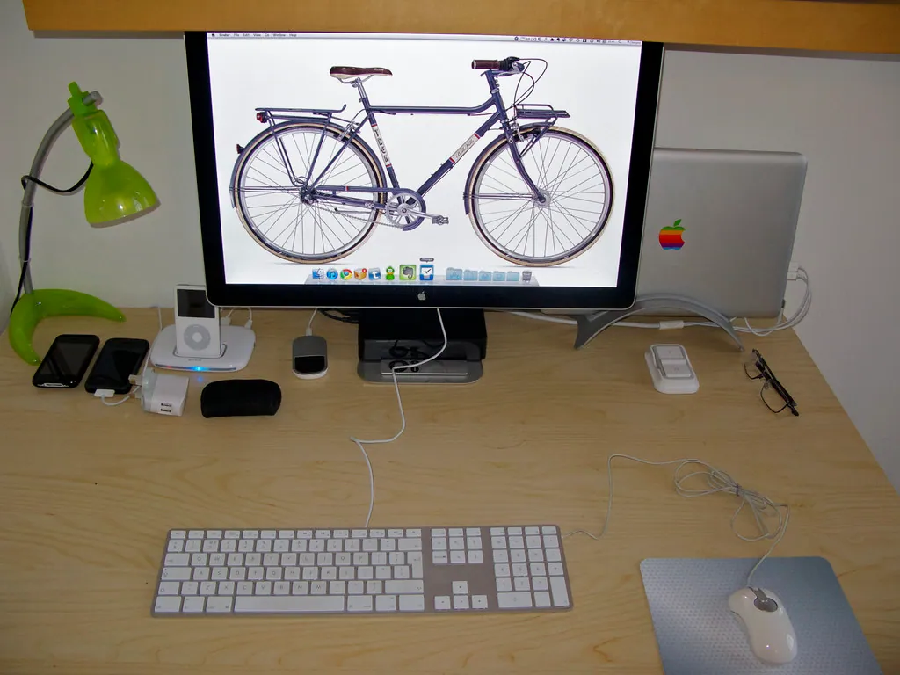

Everyday Programs
This is where a computer becomes a joy: browsing the web, seeing your family on a video call, enjoying your photos, and setting the screen so it is easy on your eyes.

Kindly Keystrokes is an independent educational website and is not affiliated with, endorsed by, or sponsored by any company mentioned.
The web browser: your window to the internet
A browser is the program you use to visit websites. Windows comes with one called Microsoft Edge, shown by a blue-and-green wave on the taskbar. Any browser works the same way: you type an address at the top, press Enter, and the page appears.
- Click the Edge icon on the taskbar.
- Click in the address bar at the top and type a website, such as weather.gov.
- Press Enter and read the page.
- To go back to the page before, click the left-pointing arrow at the top-left.
Tip: The difference between a search and an address: if you know the website, type its address (weather.gov). If you are looking for something, type words into the same bar (local weather forecast) and the browser will search for you.
Video calls with family
A video call lets you see and hear someone far away, through the little camera built into most laptops. For many readers this becomes the dearest thing a computer can do.
What you'll need
- A laptop with a built-in camera, or a webcam
- The same calling program as the person you want to reach
- Their username or email so you can find them
- Agree with your family member on one program — common free ones include video calling in Gmail, or apps such as Zoom or Skype.
- Open the program and sign in.
- Find the person by name or email and click their name.
- Click the Video call button (a small camera symbol).
- When they answer, you will see each other. Click the red button to hang up when you are done.
Try it now: a practice call
- Arrange a short test call with a patient relative.
- Open your calling program and start the call.
- Check that you can see and hear each other.
- Practice hanging up and calling back once.
Looking at your photos
Photos from a phone or camera live in the Pictures folder, and the Photos app shows them beautifully.
- Open the Start menu, type Photos, and click the Photos app.
- Your pictures appear as small thumbnails. Click one to see it full size.
- Use the left and right arrows on the keyboard to move between pictures.
- To make a picture larger on screen, click the magnifying-glass symbol or press the plus key.
Making the screen easier to read
You do not have to squint. Windows has generous tools for larger text and clearer pictures, gathered in one place.
- Open Settings, then Accessibility.
- Choose Text size and drag the slider until menus are comfortable, then click Apply.
- Back in Accessibility, try Magnifier to enlarge part of the screen, or Mouse pointer and touch to make the pointer bigger and easier to follow.
Inside a web page, you can also hold the Ctrl key and tap the plus key to make that page larger, or the minus key to shrink it back. It is a quick, friendly trick worth remembering.
Tip: None of these settings change your photos or files — they only change how large things look on screen. Experiment freely.
Saving pages you want to find again
When you discover a website you will want to return to — your bank, a favorite recipe collection, the weather service — you can save it as a bookmark (sometimes called a favorite). Then you never have to remember or retype the address.
- Visit the page you want to keep.
- Look for a small star symbol at the right end of the address bar and click it.
- A little box appears; click Done to save the bookmark.
- To return later, click the star-shelf or Favorites button near the top of the browser and choose the page from your list.
Tip: Bookmarking your bank and typing nothing by hand next time is also safer: you always land on the genuine page instead of a copycat.
Watching videos and catching up on shows
The internet is full of things to watch, from how-to videos to old film clips to services that carry television programs. Most play right inside your browser.
- In the address bar, type the address of a video service you have, or type a few words describing what you want to watch.
- Click a result to open it; the video usually begins on its own or after you click the large triangular play button.
- Click the play button again to pause, and drag the bar along the bottom to skip forward or back.
- Look for a small loudspeaker to adjust the volume, and a square symbol to make the picture fill the screen.
Press the same square symbol or the Escape key on your keyboard to bring a full-screen video back to a window when you are done. If a video ever starts playing before you are ready, the play button — now showing two upright bars — pauses it instantly, and clicking the picture itself often does the same.
Tip: Many video pages try to play the next clip automatically. Look for an “autoplay” switch and turn it off if you would rather choose each video yourself, at your own pace.
Weather, maps, and everyday questions
A computer is a wonderful place to look things up. You do not need to know the exact website; you can simply ask.
- Click in the address bar and type a plain question, such as weather this weekend or pharmacy near me.
- Press Enter. A list of results appears, often with the answer right at the top.
- Click a result that looks trustworthy — government and well-known organizations are good bets — to read more.
- Use the back arrow at the top-left to return to your results and try another.
Tip: For official information — the weather, government services, health facts — look for addresses ending in .gov or the site of a well-known organization. They are the most reliable.
A careful word about downloading
Sometimes a website offers a file to download — to copy onto your computer. Photos from family and documents from your bank are fine. But downloading is also how harmful programs sneak in, so a little caution goes a long way.
- Only download from websites you trust and went to on purpose.
- Never download something a pop-up urges you to install to “fix” or “speed up” your computer. That is a common trick, covered in Staying Safe Online.
- Downloaded files land in the Downloads folder, which you can open from File Explorer whenever you need them.
- If you are ever unsure whether something is safe to download, the safest answer is simply not to. A genuine file will still be there tomorrow, after you have had a chance to ask someone you trust.
With these everyday skills, your computer stops being a puzzle and starts being a companion — a way to watch, learn, look things up, and stay close to the people and interests you care about.
Sound and volume
Whether you are on a video call or watching a clip, the computer's sound is easy to control from one spot.
- Look at the bottom-right of the taskbar for a small loudspeaker symbol and click it.
- Drag the slider that appears to the right for louder, left for quieter.
- If you hear nothing at all, check that the slider is not at the far left and that the little speaker has no line through it.
- Headphones or earphones plugged into the computer switch the sound to them automatically.
Tip: Many keyboards also have small speaker pictures along the top row that raise and lower the volume with a single press — a quick shortcut once you spot them.
Keeping several pages open with tabs
A browser can hold several web pages at once in tabs, like keeping a few books open on the desk with ribbons marking your place. It saves endless flipping back and forth.
- At the top of the browser, click the small + next to your open page to start a new tab.
- Type an address in the new tab and press Enter; your first page stays open, waiting.
- Click along the row of tabs at the top to move between your open pages.
- Close a tab you have finished with by clicking the small × on that tab.
A tidy, calm computer
A few gentle habits keep a computer pleasant to use. Save files into the folder where they belong — letters in Documents, photos in Pictures. Give files names you will recognize later, such as Letter to the bank March rather than a jumble of letters. And close programs you have finished with by clicking the X, so the screen stays uncluttered. With these everyday programs in hand, the last essential lesson is the one that protects everything else: Staying Safe Online.